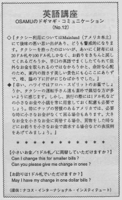

お釣りは1ドル札で頂けますか。
Osamu took a taxi but felt nervous about catching one because of a bad experience on the mainland. He didn’t trust them because they cheated him before. They gave him back the wrong change. He only had 20 and 100 dollar bills. He started to worry if they would shortchange him. After that, he couldn’t enjoy the scenery from the taxi window. Tipping is common practice in America. If anyone has done a service for you, you should tip. It’s a common courtesy. You should tip bellboys, waiters, waitresses, taxi drivers, valet boys, hairdressers. Even for some Americans it is awkward to give a big bill to the person. There’s a fear that they will think they are getting a big tip. It’s better to have a few dollars ready if you want to avoid this situation. You have to think ahead of time. When getting change- “Could I get a few dollar bills?”
タクシー利用については、メインランド（アメリカ本土）で後味のわるい思い出があり、どうも警戒的になります。タクシーを拾ったのはいいが、あいにく財布には２０ドル札や１００ドル札しかなく、お釣をきちんと戻してくれるだろうか、早口の英語でまくしたてられて法外なお金をとられるのではなかろうかと、余計な心配のため、家内の指さす美しい景色にも心ここにあらずで、唯、脇の下に汗がにじむばかりでした。
幸い、ハワイではアロハ・スピリッツのお陰でしょうか、タクシーの運転手さん達も素朴で親切な方が多いように感じます。しかし、旅行の際には１ドル札などの小さなお金や小銭を常に用意しておく配慮も必要でしょう。特にチップの習慣のあるアメリカでは、必要な時に小さなお金がなくて困る場合もあります。大きなお金を小さなお金に両替する場合、買物をした時など、お釣を小さなお金で請求する場合などの表現例をあげてみましょう。
小さなお金（１ドル札）に両替して頂けますか。
Can I change this for smaller bills?
Can you please give me change in ones?
お釣は１ドル札で頂けますか。
May I have my change in one dollar bills?

| © 1995-2013 NACOS International Institute. All Rights Reserved. |